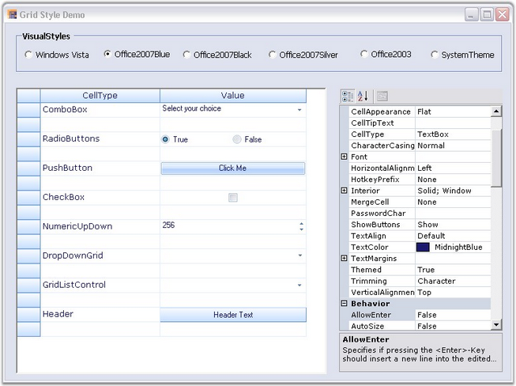

This section provides information on the VisualStyles and ThemesEnabled properties (XP themes) of the Essential Grid.
Essential Grid supports a range of appearances for grid cells. Styles can be set to the grid control by assigning Syncfusion.Windows.Forms.GridVisualStyles enumeration value to the GridVisualStyles property.

Figure 149: Grid Styles
The figure above displays various visual styles in the VisualStyles group box in the UI for the Essential Grid.
Following code example illustrates how to set the visual style for the Grid control.
|
[C#]
// Sets an Office 2007 Blue skin theme to the Essential Grid control. gridControl1.GridVisualStyles = Syncfusion.Windows.Forms.GridVisualStyles.Office2007Blue; |
|
[VB.NET]
' Sets an Office 2007 Blue skin theme to the Essential Grid control. gridControl1.GridVisualStyles = Syncfusion.Windows.Forms.GridVisualStyles.Office2007Blue |
ThemesEnabled property determines whether XP Themes (visual styles) can be used for this control or not, when available.
Following code example illustrates how to set the theme for the Grid control.
|
[C#]
this.gridControl1.ThemesEnabled = true; |
|
[VB.NET]
Me.gridControl1.ThemesEnabled = True |